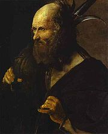

| Апостол Фаддей Материал из Википедии — свободной энциклопедии |
|  Св. Иуда Фаддей, Ж. Латур |
Иу́да Фадде́й (Иуда Иаковлев или Леввей) — согласно Библии — один из 12 апостолов, брат
Иакова Алфеева, сын Алфея или Клеопы.
Упомянут в списках апостолов в Евангелиях от Луки (Лк 6,16) и от Иоанна(14,22); а также в Деяниях Апостолов (1,13). В Евангелии от Иоанна Иуда на Тайной Вечере задаёт вопрос Иисусу о его грядущем воскресении. При этом он назван «Иуда, не Искариот», чтобы отличить его от Иуды — предателя. Согласно преданию, апостол Иуда проповедовал в Палестине, в Аравии, Сирии и Месопотамии, и умер мученической смертью в Армении во второй половине I века н. э. Предполагаемая могила расположена на территории армянского монастыря святого Фаддея на северо-западе Ирана. Память апостола Иуды Католическая церковь отмечает 28 октября, Православная церковь (по юлианскому календарю) — 19 июня и 30 июня (Собор двенадцати апостолов). |
Идентификация с ФаддеемВ Евангелии от Матфея (10,3) и от Марка (3,18) упоминается Фаддей или Левей, прозванный Фаддеем; по мнению большинства толкователей — это тот же самый Иуда. |
Идентификация с Иудой - братом ИисусаВ Средние века апостол Иуда зачастую отождествлялся с Иудой, братом Иисуса Христа, упомянутым в Евангелии от Марка (6,3), точно так же как и брат апостола Иуды — Иаков Алфеев отождествлялся с Иаковом Праведным. Сейчас большинство библеистов полагают апостола Иуду и Иуду, «брата Господня», разными лицами. Определённую трудность в связи с этим вызывает установление авторства Послания Иуды, где Иуда называет себя братом Иакова. Мученичество апостола Фаддея (Нюрнбергская хроника, 1493 год)Православное предание, отождествляющее апостола Иуду и Иуду, «брата Господня», говорит о том, что апостол Иуда не дерзал называть себя сводным братом Господним (Иуд.1:1) по той причине, что когда Иосиф Обручник решил разделить между наследниками своё имущество, то все, кроме Иакова, не пожелали, чтобы и Иисус получил надел, равный с наделами сыновьями Иосифа от первой жены [1] |
| Святой апостол Иуда, из числа 12-ти учеников Христовых,
происходил из рода царя
ДавидаЖитие.. Святой царь и пророк Давид.Икона. Царь Давид и Соломона, был сыном праведного
Иосифа ОбручникаЖитие.. Святой Иосиф Обручник.Икона. Иосиф Праведный, ОбручникМолитвы от его
первой жены.
Святой апостол Иоанн БогословЖитие.. Апостол и евангелист Иоанн БогословИкона. Иоанн Богослов на острове ПатмосМолитвыХрамы в своем Евангелии пишет: "Ни братья бо Его вероваху в Него" (Ин. 7, 5). Святитель Феофилакт, архиепископ Болгарский, объясняет эти слова так: в начале земного служения Господа Иисуса Христа сыновья Иосифа, в том числе и Иуда, не верили в Его Божественную сущность. Предание указывает, что, когда праведный Иосиф Обручник, возвратившись из Египта, стал делить между сыновьями принадлежавшую ему землю, он пожелал выделить часть и Христу Спасителю, рожденному преестественно и нетленно от Пречистой Девы Марии. Братья воспротивились этому, и только старший из них, ИаковЖитие.. Апостол Иаков, брат Господень.Икона. Иаков брат Господень, апостолМолитвы, принял Христа Иисуса в совместное владение своей долей и за это был назван братом Господним. Позднее Иуда поверил во Христа Спасителя как ожидаемого Мессию, всем сердцем обратился к Нему и был избран Им в число ближайших 12-ти учеников. Но, помня свой грех, апостол Иуда считал себя недостойным называться братом Божиим и в своем соборном послании именует себя лишь братом Иакова. Святой апостол Иуда имел и другие имена: евангелист МатфейЖитие.. Апостол МатфейИкона. Евангелист МатфейМолитвыХрамы называет его "Леввеем, прозванным Фаддеем" (Мф. 10, 3), святой евангелист МаркЖитие.. Апостол и евангелист МаркИкона. Апостол и евангелист Марк тоже называет его Фаддеем (Мк. 3, 18), а в Деяниях святых апостолов он упоминается под именем Варсавы (Деян. 15, 22). В то время это было в обычае. По Вознесении Господа Иисуса ХристаО празднике.. Вознесение ГосподнеИкона. Вознесение ГосподнеМолитвыХрамы апостол Иуда отправился с проповедью Евангелия. Он распространял веру во Христа сначала в Иудее, Галилее, Самарии и Идумее, а затем - в странах Аравии, Сирии и Месопотамии и, наконец, пришел в город Эдессу. Здесь он завершил то, что не было закончено его предшественником, апостолом из числа 70-ти, ФаддеемЖитие.. Апостол Фаддей от 70-тиИкона. Фаддей Апостол от 70-тиМолитвы. Сохранилось известие, что святой апостол Иуда ходил с проповедью в Персию и оттуда написал на греческом языке свое соборное послание, в кратких словах которого заключено много глубоких истин. Оно содержит догматическое учение о Святой Троице, о воплощении Господа Иисуса Христа, о различии Ангелов добрых и злых, о будущем Страшном Суде. В нравственном отношении апостол убеждает верующих беречь себя от плотской нечистоты, быть исправными в своих должностях, молитве, вере и любви, заблудших обращать на путь спасения, охранять себя от учений еретиков. Апостол Иуда учит, что недостаточно только веры во Христа, необходимы еще и добрые дела, свойственные христианскому учению. Святой апостол Иуда мученически скончался около 80-го года в Армении, в городе Арате, где он был распят на кресте и пронзен стрелами. http://days.pravoslavie.ru/Life/life1346.htm |